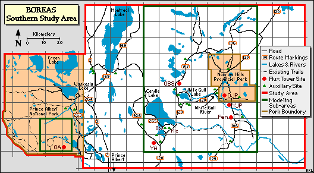
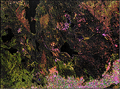
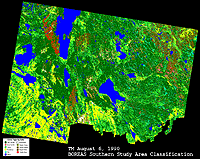
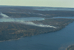
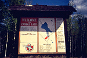

The Southern Study Area (SSA) is 130 km wide by 90 km around Prince Albert, Saskatchewan,. The southern boundary can be reached within 40 km north from the town of Prince Albert (PA) about 780 km from the Northern Study Area. The SSA topography is gentle, with a relief 550m to 730m. Soils range from gray wooded to degraded black classified as brunisolic, gleysolic, chernozemic, luvisolic and organic soil orders. The surficial deposits vary in thicknesses from 100m to 1000m on top of the Cretaceous Age bedrock. The western part of SSA is in the Prince Albert National Park (PANP) and the eastern region falls within and around the Narrow Hills Provincial Forest. The PANP land is managed by the Canadian Parks Service. There are two major vegetation zones in the study area,the mixed wood section of the boreal forest region and the aspen grove section.


The BOREAS Southern Study Area (SSA). Click on a site (red letters) to visit that sites page
The Southern Study Area has six main sites in and around the Price Albert National Park and Narrow Hills Provincial Forest. They are:
|  Satellite image of the SSA (Landsat TM Aug 6, 1990) |  Land Cover Classifcation image of the SSA (Aug 6, 1990) |
|  An aerial view of the SSA, with fires burning (IFC-2, 1994) |  Candle Lake sign, near SSA-Ops |
The Southern Study Area (SSA) is 130 km wide by 90 km around Prince Albert, Saskatchewan,. The southern boundary can be reached within 40 km north from the town of Prince Albert (PA) about 780 km southwest of the Northern Study Area. The coordinates of the SSA are listed in the table below, in Latitude-Longitude and UTM (Northing-Easting).
| NAD83 Coordinates | NAD27 Coordinates | ||||
| Corner | Longitude | Latitude | Easting | Northing | Zone |
|---|---|---|---|---|---|
| NW | -106.23 | 54.319 | 420,187 | 6,019,734 | 13 |
| NE | -104.24 | 54.223 | 549,7990 | 6,008,564 | 13 |
| SE | -104.37 | 53.419 | 542,029 | 5,919,013 | 13 |
| SW | -106.32 | 53.513 | 412,468 | 5,930,178 | 13 |
The following chart provides an example time conversion for standard and daylight savings time periods for 1993 to 1996 from local times at the SSA to GMT.
| Dates For Daylight Savings Time |
|---|
| April 4 - October 31, 1993 April 2 - October 30, 1994 April 3 - October 31, 1995 April 7 - October 27, 1996 |
| GMT | US East Coast | Manitoba | Saskatchewan | |
|---|---|---|---|---|
| Standard Time | 1300 | 0800 | 0700 | 0700 |
| Daylight Savings | 1300 | 0900 | 0800 | 0700 |
In a nutshell:
Ecological Setting: The PANP area is characterized by aspen and spruce uplands, black spruce and tamarack bogs, jack pine ridges, sedge meadows and fescue grassland outliers. White spruce is also common and balsam fir occurs in minor quantities. The SSA is near the southern limit of the boreal forest; transition to natural prairie grassland occurs 15 km to the southeast. The agricultural transition occurs to the south of the PANP boundary. The eastern section of the study area is in the mixed wood section of the boreal forest zone. Around Candle Lake, mixed woods composed of aspen and white spruce are common where the sites are well drained. Jack pine-black spruce exist around the Torch River Plain with pure stands of jack pine on dry sites composed of coarse textured soils. In the poorly drained areas throughout the study area, bogs support black spruce with some tamarack. The fen areas are composed mostly of sedge vegetation with discontinuous cover of tamarack or swamp birch.
Vegetation: There are two major vegetation groups consisting of the Boreal Forest and aspen groves. The site within the PANP boundary is characterized by aspen and spruce uplands, black spruce and tamarack bogs, jack pine ridges, sedge meadows and fescue grassland outliers. Ages commonly range between 50-100 years. Heights typically range from 15 to 22m, although there are stunted black spruce in bog areas. Some areas are characterized by small (10-30m) holes in the canopy due to local wet sites. There are large patches of aspen and to a lesser extent jack pine and black spruce and patches of uniform inhomogeneity. Forest cover is often controlled by small changes in relief and soil/soil drainage. Aspen occurs on the uplands, jack pine on minor ridges and black spruce in the lower poorly drained sites. There has been no logging or fires in PANP since the 1940s.
 To the east of PANP the vegetation is classified as mixed boreal forest. On well drained and or sandy soil the predominant species is jack pine. Poorly drained sites support black spruce. Mixed stands of aspen and white spruce are found on well drained glacial deposits. Localized logging occurs by fence post operators and by Weyerhaeuser.
To the east of PANP the vegetation is classified as mixed boreal forest. On well drained and or sandy soil the predominant species is jack pine. Poorly drained sites support black spruce. Mixed stands of aspen and white spruce are found on well drained glacial deposits. Localized logging occurs by fence post operators and by Weyerhaeuser.
Fire History: Within the southern half of the PANP there were fires during 1940-1949 over the central region. West of Bittern Lake there was a fire in 1969. In the NE section of the Study Area the Fishing Lakes burn occurred in 1977-1978. South of Bittern Lake and West of Montreal Lake there was a fire in 1989. Overall, recent fires have been limited in extent and frequency through a comprehensive forest fire suppression program.
Note: The SSA was heavily hit by severe fires in the summer of 1995. Several sites were evacuated, but no infrastructure damage occured.
Physiography: The SSA site lies within the Saskatchewan Plains Region of the Great Plains Province of North America with elevations ranging from 400 to 700m. There are several sections including the Waskesiu Hills Upland, Wapawekka Hills Upland, White Gull Creek Plain, Montreal Lake Plain and the Spruce River Plain.
Surficial Geology: The surface deposits are of Pleistocene or Recent age. The Pleistocene deposits are of glacial origin. These deposits are in the form of till, glaciolacustrine or lacustrine, and glaciofluvial or outwash materials with thicknesses from 100 to 400m. Glacial till deposits are shallower in the lowlands and in the depression where Candle Lake is located. The glacial drift is undifferentiated; mainly gray, calcareous till. It also contains gray, calcareous, gravel, sand, and silt; and clay that weathers to an olive or brown color. Organic deposits of Recent Age were formed after the glacial period.
Bedrock Geology: Directly beneath the surficial deposits are the Lea Park formation, Upper Colorado Group, Ashville-Lower Colorado Group and the Swan River Group, all of Cretaceous age. The bedrock topography has a surface that has been glacially eroded as indicated by its broad, featureless, gently undulating nature.
Landforms: The landforms consist of glacial till plains, and rolling or hilly moraines. They are of glaciofluvial, glaciolacustrine, fluvial lacustrine, alluvial and aeolian origin.
Soils: The soils have developed on thick glacial deposits. The region consists of glacial till, glaciolacustrine and glaciofluvial material of Late Wisconsin age and recent organic deposits. Soils range from gray wooded to degraded black with brunisolic, gleysolic, chernozemic, luvisolic and organic soil orders.
Topography: The Saskatchewan Plains is an area of gentle relief. The region has elevations ranging from 400 - 700m. The Waskesiu Hills Upland and the Wapawekka Hills upland are roughly undulating, often ridged or fluted, till plain. The White Gull Creek Plain is a gently undulating to moderately rolling outwash plain. Fluvial lacustrine sands, sometimes reworked into sand dunes, are the most common surficial deposits.
Hydrology: Most of the study area is located within the Saskatchewan River drainage system. In the PANP, the Spruce & Sturgeon Rivers connect to the Saskatchewan River near the town of Prince Albert. In the middle of the study area, Candle Lake is a depression at the headwaters of the Torch River which drains the surrounding area. Intertill aquifers are common and are composed of up to 200 feet of fine to coarse-grained sand. A few surficial aquifers are present in gravel deposits but most are in interbedded fine to medium-grained sand and silt. Aquifers occur in these sediments where the sand beds are sufficiently extensive and thick.
Related Pages:
 BOREAS Home
BOREAS Home
 Study Region Overview
Study Region Overview
 Southern Study Area (SSA)
Southern Study Area (SSA)
 Northern Study Area (NSA)
Northern Study Area (NSA)
Revison Date: January 25, 1999
{kind=link}
{kind=link}
{kind=link}
{kind=link}